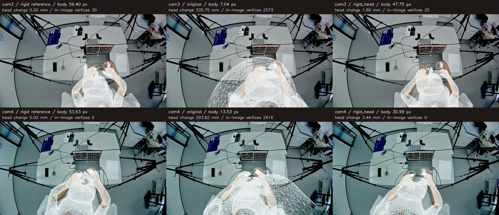
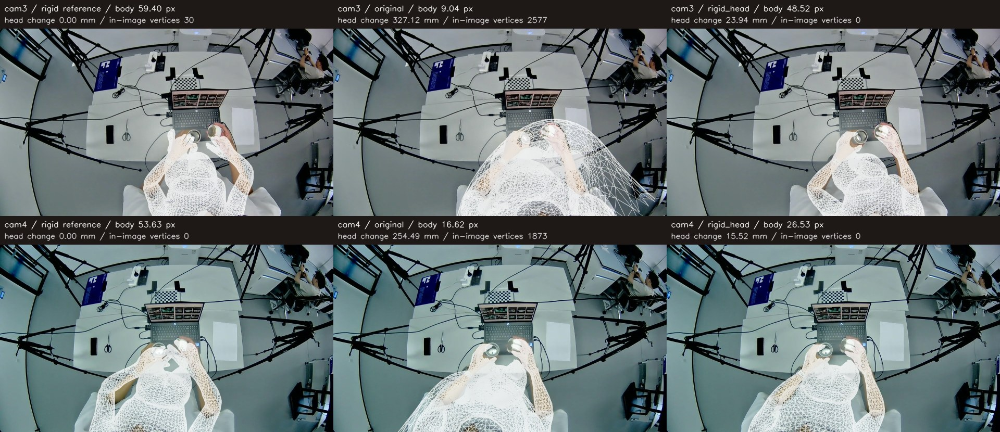

第三组中心两帧：原流程只加头部参考0.1
cam3 · 19.416 s / cam4 · 19.407 s。原13个候选身体点，筛选后10＋12个；新增二维自动点为0。
核对原始代码：下颌旋转、表情采用中性默认值；Neck、Head局部旋转仍由网络预测，刚体阶段保留，身体阶段原本允许改变。本次通过相机坐标中的头部表面软保持项保留刚体参考，不使用新增neck/肩峰目标，也不启用之前8°／85%的头部限制。
只增加头部参考权重0.1，中心两帧的身体优化和最终融合均未再出现原流程的大面积头部外扩。原始及刚体结果、自动目标及算法其余设置一致，支持该参考项是本例抑制外扩的有效因素。但自动点误差升高，cam3左腕仍有4处局部投影交叉；这不是整体精度全面提升，也不能保证任意帧不外扩。
报告与方法 · 逐阶段数据 · CSV · 原始头部参数核查 · 离线网页 · 结果包 · 重载验证
| 方案 | 最终身体RMSE / 22点 | 最终手部RMSE / 84点 | 局部交叉检查通过 |
|---|
| 原流程 | 13.71 px | 9.34 px | 1 / 2 |
| 原流程＋头部参考0.1 | 38.13 px | 10.67 px | 1 / 2 |
RMSE参考同一批自动点，非人工真值。头部位移相对刚体参考，非真实头部定位误差。头部入图顶点数为几何诊断，不等于可见面积或准确率。

身体阶段：刚体参考 / 原流程 / 本次
最终阶段：刚体参考 / 原流程融合 / 本次融合本次只改变头部参考项。没有提前加入MANO、没有提前加入肩臂轮廓、没有引入统一后续目标或后续仅8个上肢关节优化。原始网络和自动标注缓存复用，身体优化至最终融合完整重跑。配置差异审计；代码哈希。
模型内部3345个头部表面顶点用于三维保持项，不是新增Sapiens2自动点。头部先验权重统一为0.1，按刚体头部RMS半径平方归一化，无按帧调参。
回退checkpoint：57c0d66440813300b70987d668702e6cb4dbc45b；拟合代码：dbc9893c9f8ab7effa27ae8cf9cef1444ce88529。独立实验分支，默认流程不替换。